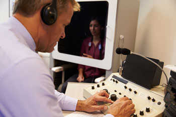
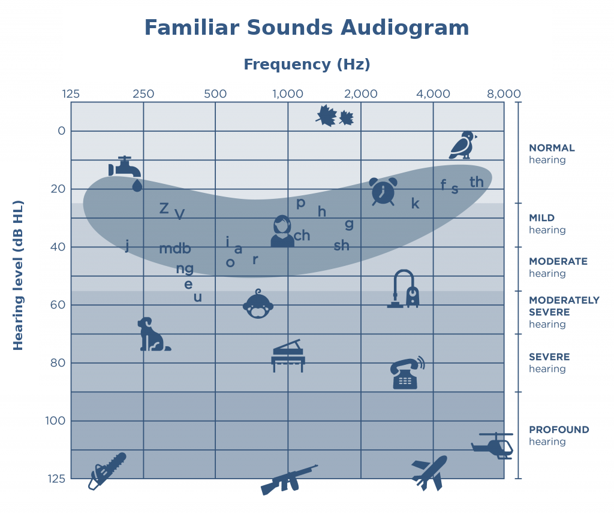
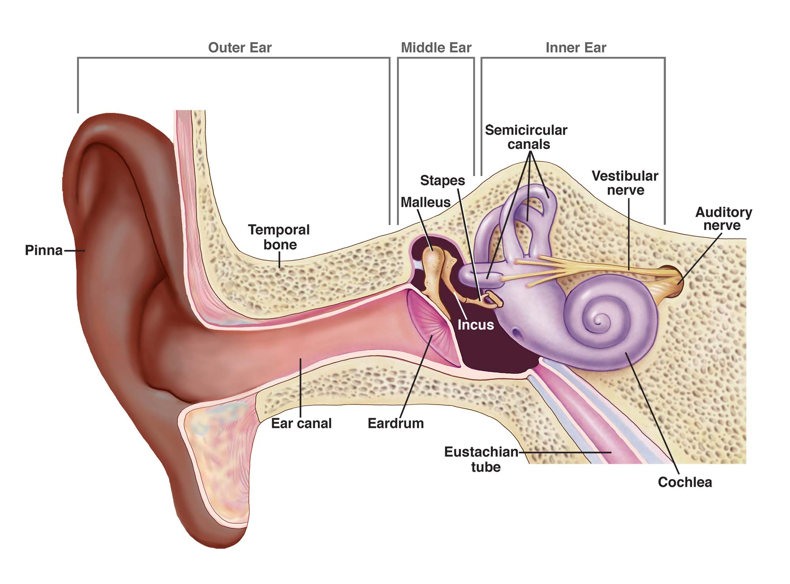
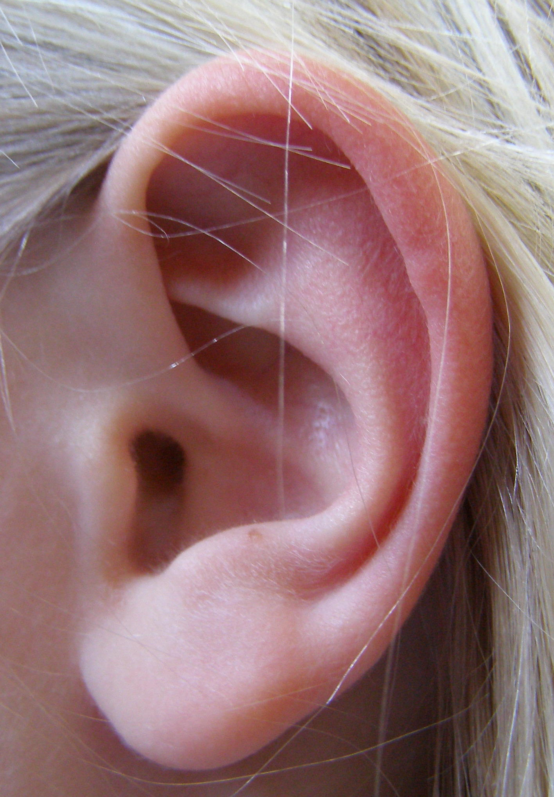
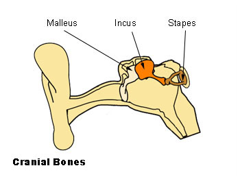
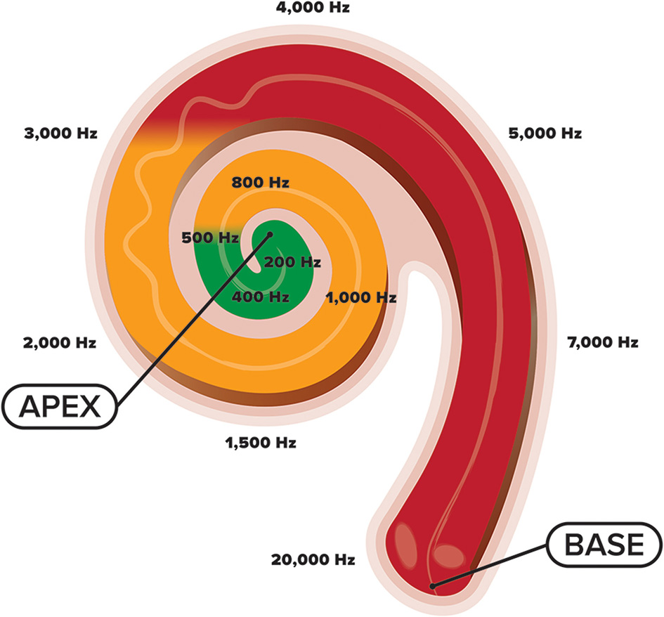
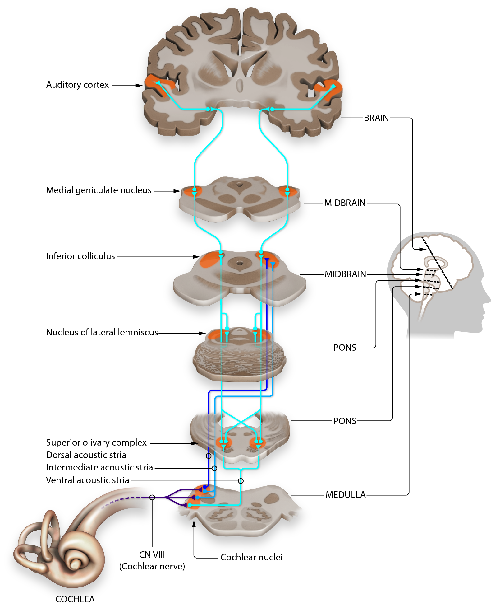

Foundations of Audiology
A lesson on what audiologists do, how sound behaves, and how the ear turns a pressure wave in the air into something you hear.
What you should be able to do afterward
By the end of this lesson you should be able to:
- Describe what audiology is, where audiologists work, and why it matters to SLP practice.
- Distinguish a degree, a state license, a certification, and an association membership.
- Describe sound as a mechanical wave, and tell frequency, amplitude, and sound level (with their units) apart from the perceptions of pitch and loudness.
- Interpret a decibel change conceptually, and relate basic acoustics to speech audibility.
- Identify the outer, middle, inner, and central auditory structures, and distinguish conductive delivery from sensorineural transduction.
- Trace sound from the environment to perception, including basilar-membrane tonotopy.
Why this matters for SLPs
Audiology and speech-language pathology overlap throughout a career. You will share clients, read audiology reports, and plan therapy with a person's hearing in mind. This lesson gives you the conceptual grounding for later work on screening, assessment, hearing loss, and interprofessional collaboration.
Introduction to Audiology
What audiology is, what audiologists do, where they work, and how their work connects to yours.
1.1 · What audiology is
A profession focused on hearing and balance
Audiology is the health profession devoted to the identification, assessment, treatment and rehabilitation, and prevention of hearing and balance disorders, along with the effects of hearing loss on communication and psychosocial well-being. Audiologists provide patient-centered care for people of all ages, newborns through older adults. Notice the two domains in that definition: hearing (the auditory system) and balance (the vestibular system), which share the inner ear.
It is worth dispelling a common impression right away: audiologists do far more than "give hearing tests." Their work spans prevention, early identification, diagnosis, management with devices and technology, rehabilitation, counseling, and education.
Before we get into tests and ear anatomy, let's answer a fair question: why should a future speech-language pathologist spend time on audiology? Here's the short version. Audiology is the health profession focused on hearing and balance. For people whose communication goals include listening and spoken language, reliable access to speech sounds is especially important. A child who only inconsistently hears the contrasts between similar sounds may need additional support to learn words, follow a classroom, and join a conversation.
Audiologists do far more than hand someone a hearing test. They help prevent hearing loss, identify it early, assess it, and support people through devices, counseling, and rehabilitation across the whole lifespan. That work overlaps with ours constantly. You'll share clients. You'll read audiology reports. You'll plan therapy with the person's hearing status, technology, communication modality, and access needs in mind.
So as we move through sound and the hearing system, keep one question in mind: how would this change the way I support a real person's communication? That's the lens that makes this lesson clinically useful, not just academic.
1.2 · What audiologists do
The arc of patient care
A useful way to organize the work is as an arc of care rather than a list of tasks. Within audiologic scope, audiologists:
- ✅ Prevent hearing loss, hearing conservation and public education.
- ✅ Identify and assess, newborn screening; behavioral and objective measures interpreted together.
- ✅ Manage and treat, selecting, fitting, and programming hearing aids and other technology; nonmedical management of tinnitus.
- ✅ Rehabilitate, audiologic rehabilitation to support listening and communication.
- ✅ Counsel and educate patients and families; they also work on the balance (vestibular) side of the inner ear.
Outside audiologic scope, handled by appropriately licensed medical professionals:
- ❌ Prescribing medication for an ear infection.
- ❌ Performing surgery on the ear.
Actual day-to-day scope also depends on a person's training, setting, and jurisdiction.

1.3 · Where audiologists work
Many settings, different daily roles
Audiologists practice in a range of settings, and the day-to-day work differs by place:
- Schools / educational audiology, classroom acoustics, assistive listening, and students' access to instruction.
- Hospitals & medical centers, working alongside physicians on diagnosis and management.
- Private practice, assessment, hearing-aid services, and follow-up care.
- Industry, product development or occupational hearing conservation.
- Universities & research, teaching and studying hearing science.
The same profession, then, looks quite different from one setting to the next.
1.4 · Becoming an audiologist
Degree, license, certification, membership: four different things
AuD: the degree
The Doctor of Audiology is a professional doctoral degree, typically a four-year post-baccalaureate program in the United States, with program-to-program variation. Since 2007 the AuD has been the entry-level degree for clinical practice. (Some clinicians still practice with earlier master's-level degrees.)
State license: legal permission
A state license is the legal authorization to practice clinically in a jurisdiction. It is granted by a state, is generally required to see patients, and is renewed periodically. This is the credential that actually permits practice.
CCC-A: certification
The Certificate of Clinical Competence in Audiology is a voluntary national professional certification from ASHA. It is not the same as a license.
AAA membership: association
Membership in the American Academy of Audiology means joining a professional association for development, education, and advocacy. It is not a degree, a license, or a certification.
Program structure, the Praxis examination, certification, and licensure timing can vary by jurisdiction and individual pathway, so there is no single universal sequence. Current guidance, as of 2026: ASHA's 2020 audiology certification standards apply, and updated 2027 standards take effect August 1, 2027, useful context, not something to memorize. (Older materials sometimes show "F-AAA"; that Fellow category was discontinued and is no longer a current designation.)
1.5 · Working with SLPs
Audiology and speech-language pathology, side by side
When hearing loss affects communication, audiologists and SLPs often work together. Audiologic (aural) rehabilitation is intervention that reduces the communication difficulties associated with hearing loss, through a person-centered mix of technology, instruction, listening practice, and counseling. Some of that work is led by audiologists; some overlaps with what SLPs do.
The roles are distinct but complementary. Broadly, the audiologist concentrates on hearing assessment and the technology that supports access, while the SLP concentrates on communication and language goals. They coordinate around shared goals; they are not interchangeable.
1.6 · Audiologists in their own words
Two professional profiles
These short profiles from the American Speech-Language-Hearing Association show how setting shapes the work.
Dr. Chizuko Tamaki, Private Practice Audiologist (ASHA)
A look at audiology in a private-practice setting.
Open this video in a regular browser ↗Dr. Julie Martinez Verhoff, School Audiologist (ASHA)
A look at audiology in an educational setting.
Open this video in a regular browser ↗Physics of Sound
What sound actually is, the variables we use to describe it, and why those variables are not the same as what we perceive.
2.1 · Acoustics
Sound is a mechanical wave that needs a medium
Acoustics is the branch of physics that studies mechanical waves in gases, liquids, and solids. Sound is one of those waves: a disturbance that travels by making the particles of a medium push and pull on their neighbors. Because sound is mechanical, it needs a medium, air, water, bone, tissue, to travel through. There is no sound in a true vacuum. This is the foundation for everything an audiologist does: to understand how a person hears, we start with the wave that reaches the ear.
2.2 · Speed of sound
Speed depends on the medium
How fast does sound travel? It depends on the medium. Under ordinary conditions sound moves at roughly 343 metres per second in air and about 1480 metres per second in water, faster in water. The reason is not simply that water's molecules are closer together. A medium's speed of sound is set by two properties working together: its stiffness (an elastic property) and its density (an inertial property). A stiffer medium springs back faster and tends to carry sound more quickly; greater density tends to slow it. Water is far stiffer than air, and that stiffness wins out.
Teaching schematic, sound speed across media
Schematic only, distances are illustrative, not to scale.
Predict first: a friend claps once at the far end of a long swimming pool. Do you hear it sooner through the air or through the water?
Sooner through the water. Water's much greater stiffness carries the disturbance faster (≈ 1480 m/s) than air (≈ 343 m/s), even though water is denser.
2.3 · Waveform anatomy
Two things a wave can do, independently
Picture a simple repeating (sine) wave. Two features can change on their own. Frequency is how many cycles happen each second, drawn as how tightly packed the wave is. Amplitude is the size of the disturbance, drawn as the height of the wave. The key idea is that these are independent: you can make a wave taller without changing how fast it cycles, and faster without making it taller. In the explorer below, the height represents relative pressure amplitude in arbitrary units, a teaching display, not a calibrated level.
Set the sliders first: the tone plays the chosen frequency, and its volume follows the relative-amplitude setting. Lower your device volume before playing. This tone stays at a conservatively low digital level, is not calibrated, and is not a hearing test. It stops automatically after a few seconds.
Let's separate two ideas that are easy to blur: what a sound wave physically does, and what we experience when we hear it. Try the waveform explorer beside me as you listen.
The first control changes frequency — how many times the wave cycles each second. Frequency is a physical property, and we measure it in hertz. It's strongly related to the pitch we hear: higher frequency, higher pitch. But frequency and pitch are not the same thing. One is out in the world; the other is your perception.
The second control changes the wave's amplitude — here, that's the relative size of the pressure changes, shown in arbitrary units. Notice you can make the wave taller without changing how fast it cycles. When we talk about how intense a sound actually is, we describe its level, and level is expressed in decibels relative to a stated reference. Greater level strongly influences how loud a sound seems — but, again, physical level and perceived loudness are related, not identical. Two sounds at the same level can seem different depending on their frequency and the listener.
So as you move the sliders, hold one idea firmly: frequency and amplitude are physical and independent; pitch and loudness are what your brain makes of them.
2.4 · Physical vs. perceptual
Keep the world and the experience separate
This is the distinction students most often blur, so let's make it explicit. On the physical side, frequency is measured in hertz (Hz), and a sound's level is expressed in decibels (dB) relative to a stated reference. On the perceptual side, pitch is what we hear that is most closely related to frequency, and loudness is what we hear that is most closely related to level. The pairs are strongly related but not identical: perception also depends on frequency, duration, context, and the listener.
Physical (out in the world)
Frequency → hertz (Hz).
Sound level → decibels (dB), relative to a stated reference. (Amplitude itself is not "measured in dB"; level is.)
Perceptual (in the listener)
Pitch → most related to frequency.
Loudness → most related to level.
Related to the physical side, but not the same thing.
2.5 · Decibels
Why the decibel scale is tricky
The decibel scale is logarithmic, which means equal steps on the scale are not equal jumps in physical energy. The rule worth remembering: a 10 dB increase is about a tenfold increase in intensity (using the same measure and reference). So +20 dB is about a hundredfold, and +30 dB about a thousandfold, the differences pile up fast. A 60 dB difference is about one million times the intensity (not billions). But a tenfold jump in intensity does not mean a sound is "ten times as loud": under typical conditions a 10 dB increase is often perceived as roughly twice as loud, and the exact experience varies with frequency, duration, context, and listener. Decibels let us write enormous physical ratios with manageable numbers; they relate to loudness but are not a direct loudness scale.
Decibel steps vs. intensity ratio
Intensity ratio, not loudness. "Twice as loud" is roughly a 10 dB change for many listeners under typical conditions.
Decibels trip up almost everyone at first, so let's go slowly. The decibel scale is logarithmic. That means equal steps on the scale are not equal jumps in physical energy.
Here's the rule worth remembering: an increase of ten decibels corresponds to about a tenfold increase in sound intensity, when we use the same reference and measure. Ten decibels up is ten times the intensity. Twenty decibels up is ten times ten — a hundredfold. Thirty decibels up is a thousandfold. The differences pile up fast. Compare two sound levels that differ by sixty decibels, using the same type of measurement and the same reference. That difference corresponds to about one million times the physical intensity — not billions, but one million.
But here's the part to hold onto: a tenfold increase in intensity does not mean ten times as loud. Under typical conditions, a ten-decibel increase is often perceived as about twice as loud, although the exact experience varies with frequency, duration, context, and the listener. Decibels let us express enormous physical ratios with manageable numbers. They relate to loudness, but they are not a direct loudness scale.
2.6 · The range of human hearing
An approximate window
A common textbook range for young listeners with typical hearing is about 20 Hz to 20,000 Hz. Treat this as an approximation, not a guarantee: the usable range varies with age, hearing status, the equipment, the level, and the conditions. The high end in particular tends to shrink with age and noise exposure.
20 – 20,000 Hz Audio Sweep | Range of Human Hearing (Sonic Electronix)
Open this video in a regular browser ↗2.7 · Speech acoustics
From sound to speech
Speech is a complex mix of frequencies, with most of its energy roughly in the 200–3500 Hz region (treat these numbers as approximate). Every voice also has a fundamental frequency, a physical measure in hertz that strongly influences perceived pitch, set by how fast the vocal folds vibrate. Typical fundamental-frequency values are broad and overlapping examples, for many adults around 90–155 Hz, for many adults around 165–255 Hz, and for many children around 300 Hz; these are illustrative ranges, and a person's fundamental frequency is not determined by gender alone.
We also group speech sounds by how they are made. Vowels are produced with a relatively open vocal tract and carry much of the energy. Consonants are made by constricting or blocking the airflow, and they include classes such as stops, fricatives, nasals, affricates, the glides /w, j/, and the liquids /l, ɹ/, the glides and liquids together are often grouped more broadly as approximants. (If your assigned textbook uses a different convention, follow it and flag the difference.)

Reading this audiogram: the horizontal axis is frequency in hertz (Hz) and the vertical axis is hearing level in decibels HL (dB HL). The plotted locations of speech and environmental sounds are approximate, and detecting a sound does not guarantee recognizing or understanding it.
Here is the payoff for SLPs. Vowels generally carry more acoustic energy and are easier to detect, but many word distinctions depend on lower-intensity consonant cues, including higher-frequency frication. Some fricatives, like the first sounds in "see" and "she," carry substantial high-frequency energy; others, like the first sounds in "fee" and "think," are relatively weak. So a listener can detect that someone is talking yet still confuse words such as "sat," "fat," and "that," because the consonant cues that separate them are not equally audible.
You've probably seen the "speech banana" — that banana-shaped region drawn across an audiogram. Think of it as a teaching schematic: a rough map of where many speech sounds tend to fall by frequency and level. It is not a precise measurement, and no single sound sits at one exact point.
Here's why it matters for us. Vowels generally carry more acoustic energy and are often easier to detect. Many word distinctions, however, depend on lower-intensity consonant cues. Some fricatives, such as the first sounds in "see" and "she," contain substantial high-frequency energy. Others, such as the first sounds in "fee" and "think," are relatively weak and easy to miss. A listener may clearly detect that someone is talking yet confuse words such as "sat," "fat," and "that" because the initial consonant cues are not equally audible. That one idea explains a great deal of real-world communication difficulty.
One caution: any sound you play through a laptop or phone is a demonstration, not a hearing test. Consumer speakers and headphones aren't calibrated, so never use them to judge anyone's hearing. We're building intuition here, not measuring thresholds.
Anatomy & Physiology of the Hearing Mechanism
Follow one signal from the outer ear to perception, and notice where each structure hands it along.
3.1 · A functional roadmap
Three jobs: conductive, sensorineural, central
Before naming structures, hold a roadmap of jobs in mind, it makes the anatomy much easier. This is a map of function, not a list of hearing-loss diagnoses. There are three levels. Conductive means delivering sound inward: the outer ear and the air-filled middle ear catch the sound and pass the vibration along, all still as mechanical motion. Sensorineural means the inner ear and auditory nerve take over: in the cochlea, hair cells perform transduction, converting mechanical motion into neural signals, and the auditory nerve carries that information onward. Central means the brainstem and cortex, where the brain processes the signals into perception.

Explore, the auditory system, region by region
Select a region to see its structures, its primary function, and where it sits in the pathway.
Before we name a single structure, let's get a functional roadmap in your head — because the anatomy is much easier once you know what each part is for. This is a map of jobs, not a list of hearing-loss diagnoses.
There are three functional levels. The first is conductive: delivering sound inward. That's the work of the outer ear and the middle ear — the part that catches sound, and the eardrum and tiny bones that pass the vibration along. Nothing has become a nerve signal yet; it's all still mechanical motion.
The second level is sensorineural. In the cochlea, hair cells perform transduction — they convert mechanical motion into neural signals. The auditory nerve then carries that resulting neural information onward. It doesn't do the converting itself; the hair cells do. Transduction is the heart of hearing, and we'll spend real time on it.
The third level is central: the brainstem and the cortex, where the brain processes those signals into what we actually perceive.
So as we walk from the outside in, keep sorting each part by its job. Conductive means outer- and middle-ear delivery. Sensorineural means cochlear and auditory-nerve function. Central means brainstem and cortical processing. Hold those three levels, and the rest of Part 3 falls into place.
3.2 · Outer ear
The funnel
The pinna (auricle) collects and funnels sound into the ear canal and helps with localization. The canal carries the sound to the eardrum and also gives a natural boost to a band of higher frequencies. That resonance is an approximate, variable region (roughly the 2500–4000 Hz range), not an exact value for every listener. So far the energy is still purely mechanical, this is conductive delivery.

3.3 · Middle ear
An air-filled relay
The middle ear is an air-filled space (not fluid-filled). The tympanic membrane (eardrum) is the boundary between the outer and middle ear; it vibrates in response to sound. A typical healthy eardrum is often described as pearly gray and translucent, though appearance alone does not define health. Attached to it are the three smallest bones in the body, the ossicles, malleus, incus, and stapes, which transmit and couple the vibration toward the inner ear. The Eustachian tube connects the middle ear to the back of the throat; it normally ventilates the middle ear, helps equalize pressure, and assists drainage (it is why your ears "pop" on a plane).
Children whose Eustachian tubes do not ventilate well are prone to middle-ear infections. A tympanostomy tube, a small device placed through the eardrum, provides an alternate ventilation route for the middle ear (it is not the same thing as the Eustachian tube, and it does not simply "add airflow"). Because middle-ear health affects access to sound, this matters for speech and language development, a natural point of audiologist–SLP collaboration.

Step through, middle-ear transmission
3.4 · Inner ear & transduction
Where motion becomes a signal
At the oval window, the stapes drives the fluid-filled cochlea, a coiled, snail-shaped structure. Because the inner ear is fluid-filled, the middle-ear chain has to push firmly enough to move that fluid. The motion creates a traveling wave along the basilar membrane, and riding on it is the organ of Corti, which holds the hair cells. As the membrane moves, motion within the organ of Corti deflects the hair cells' stereocilia; that deflection opens mechanically-gated channels, changes the hair cell's receptor potential, and triggers the release of neurotransmitter, which changes activity in the auditory-nerve fibers. That conversion, mechanical motion into neural signaling, is transduction, and it happens at the hair cells, not at the eardrum or ossicles.
Step through, hair-cell transduction
This is the moment sound becomes a signal your brain can use, so let's walk it step by step and get it right.
Start at the oval window, the little door into the inner ear. When the stapes pushes on it, it sets the fluid inside the cochlea moving. That fluid motion creates a traveling wave that ripples along the basilar membrane, a flexible band running the length of the coiled cochlea. Riding on top of that membrane is the organ of Corti, and sitting within it are the hair cells.
As the wave travels, movement within the organ of Corti deflects the stereocilia — the tiny hair-like bundles on top of these cells. That deflection is the key. It opens mechanically-gated channels, which changes the electrical charge inside the hair cell, its receptor potential. The hair cell then releases neurotransmitter, which changes activity in auditory-nerve fibers. And that is transduction: mechanical motion converted into neural signaling.
Notice what does the converting. It's not the eardrum, and it's not the little bones — those are still just delivering vibration. The actual conversion happens at the hair cells in the cochlea. This distinction helps us ask whether a disruption affects outer- or middle-ear delivery, cochlear transduction, or auditory-neural transmission.
3.5 · Tonotopy
The cochlea is mapped by frequency
The basilar membrane is not uniform. Near the base it is stiffer and narrower and responds most to high frequencies; toward the apex it is wider and more compliant and responds most to low frequencies. This orderly frequency map is called tonotopy. (The guitar-string analogy, tight strings for high notes, loose strings for low, is helpful but only an analogy.) Importantly, this place-frequency organization changes continuously along the cochlea rather than in discrete steps.

3.6 · Balance & the nerve
The inner ear's second job, and the route out
The inner ear wears two hats. Besides hearing, it houses the vestibular system, which supplies information about balance, spatial orientation, and head movement, a reminder of why audiology covers balance as well as hearing. Both systems report to the brain through the vestibulocochlear nerve (cranial nerve VIII, CN VIII). Think of it as a two-part route: one part carries vestibular (balance) signals and the other carries cochlear (hearing) signals, relaying both toward the brain.
3.7 · The central pathway
Multistage, and substantially bilateral
The auditory nerve (CN VIII) carries the signal from the cochlea to the brainstem, and there it enters the central auditory system. This is not a single straight wire to one spot in the brain. From the brainstem, auditory information is distributed through pathways on both sides, passing through several relay stations. Timing, level, frequency, and spatial information are analyzed at multiple stages along the way, so location processing does not wait until the cortex. By the time signals reach the auditory cortex, a great deal of analysis has already happened. Like the cochlea, the cortex carries a tonotopic map.

Go deeper (optional), the ascending auditory pathway
Ascending Auditory Pathway (Neural Academy)
For those who want more detail on the central relay stations.
Open this video in a regular browser ↗3.8 · The integrated journey
One signal, transmitted and transformed
Putting it together: an acoustic pressure variation in the air is gathered by the pinna and travels down the ear canal to the eardrum; the eardrum and ossicles vibrate and drive the oval window; the cochlear fluid and basilar membrane move; the hair cells transduce that motion into neural signals; the auditory nerve carries them to the brainstem; and multistage, bilateral central processing leads to perception. Each structure is one hand-off in a single signal being transmitted and transformed.
Journey of Sound to the Brain (NIH / NIDCD)
A clear animated overview of the whole pathway, a good synthesis of Part 3.
Open this video in a regular browser ↗Pulling it together
A short recap, plus a glossary to check yourself.
Three threads run through this lesson
First, audiology is a hearing-and-balance profession whose work spans far more than testing, and whose credentials (degree, license, certification, membership) are four different things. Second, sound is a mechanical wave whose physical variables, frequency in hertz and level in decibels relative to a reference, are related to, but not the same as, the perceptions of pitch and loudness. Third, the ear delivers sound (conductive), converts it to neural signals at the hair cells (sensorineural transduction), and processes it through a multistage, bilateral central pathway to perception. If you can trace one signal from a pressure wave to perception and name where each structure hands it along, you have the core of Lesson 1.
Glossary
Select a card to flip it for the meaning. You met each term in context above, nothing to memorize cold.